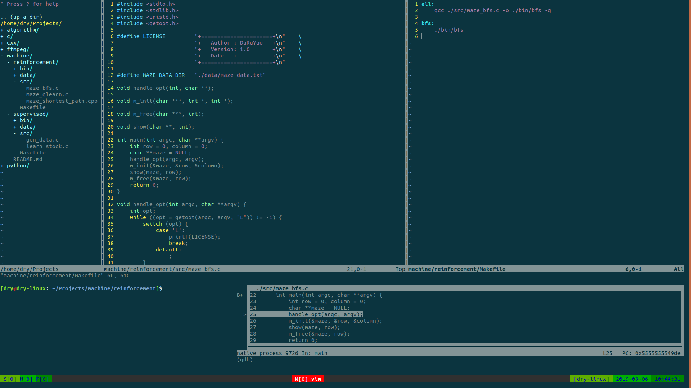

Some people have told me they don't think a fat penguin really embodies the grace of Linux, which just tells me they have never seen a angry penguin charging at them in excess of 100 mph.
—— Linus Torvalds

This blog is written for Debian/Ubuntu, and it is not suit to other Linux distribution, such as Fedora/CentOS.
Text Editor - Vim
Install
Install vim by apt.
1 | sudo apt install vim |
Set some basic configuration for vim by modifying '~/.vimrc'.
1 | vi ~/.vimrc |
1 | set tabstop=4 |
About 'Tab', choose one from the following two method depending a specific situation, such as editing Makefile.
- Replace 'Tab' with 4 spaces.
1 | set expandtab |
- Change length of 'Tab' to length of 4 spaces.
1 | set noexpandtab |
Usage
Edit a text file by vim.1
vim filename
Press Esc to start General Mode.1
2
3
4
5
6
7
8
9
10
11
12
13
14
15
16
17
18
19
20u # roll back operation
Ctrl r # roll forward operation
Ctrl f # move forward page
Ctrl b # move back page
Ctrl u # move up view
Ctrl d # move down view
<n>x # cut(delete) n characters from position of cursor
<n>dd # cut(delete) n line from line of cursor
<n>yy # copy n line from line of cursor
p # paste to the back of cursor
r # replace character in position of cursor
Shift + Cursor # select multiple lines
Shift + Ctrl + Cursor # select rectangle area
Ctrl + W, < # decline width of current window
Ctrl + W, > # increase width of current window
Ctrl + W, - # decline height of current window
Ctrl + W, + # increase height of current window
: # start Command Mode
Ctrl + V # start Visual Block Mode
Press : in General Mode to start Command Mode.
1 | :wq # save and quit |
Press Ctrl + V in General Mode to start Visual Block Mode.
It important that make sure your position of cursor is suitable before starting Visual Block Mode.
- Multi-line comment
- choosing code by Press
UporDown. - press
Ibefore typing//or#. - pressing
Escagain is necessary.
- choosing code by Press
- Cancel multi-line comment
- choosing code by Press
UporDown. - press
LeftorRightto include//or#. - pressing
d.
- choosing code by Press
Template
Make some file as template file.
1 | mkdir ~/.vim/template/ |
Add the following code to ~/.vimrc.1
2
3autocmd BufNewFile *.c 0r ~/.vim/template/template.c
autocmd BufNewFile *.cpp 0r ~/.vim/template/template.cpp
autocmd BufNewFile *.cxx 0r ~/.vim/template/template.cxx
NERDTree
The NERD tree allows you to explore your filesystem and to open files and
directories.1
2 mkdir -p ~/.vim/autoload ~/.vim/bundle && curl -LSso ~/.vim/autoload/pathogen.vim https://tpo.pe/pathogen.vim
git clone https://github.com/scrooloose/nerdtree.git ~/.vim/bundle/nerdtree
Add the following code to ~/.vimrc.1
2
3
4
5
6
7
8
9
10execute pathogen#infect()
filetype plugin indent on
map <F2> :NERDTreeToggle<CR>
let g:NERDTreeDirArrowExpandable = '+'
let g:NERDTreeDirArrowCollapsible = '-'
let g:NERDTreeWinPos='left'
let g:NERDTreeSize=30
let g:NERDTreeShowLineNumbers=0
let g:NERDTreeHidden=0
autocmd vimenter * if !argc() | NERDTree | endif
Press F2 to switch the tree directory.
Press r to refresh the tree directory.
CLick this link, see more detailed info about ~/.vimrc or download template file instead of re-editing.
Command Prompt
For User
View configuration of bash.1
vim + ~/.bashrc
Add the following text in the last line of file ~/.bashrc.1
PS1="\[\e[32;1m\][\[\e[32;1m\]\u\[\e[31;1m\]@\[\e[32;1m\]\h\[\e[37;1m\]: \[\e[34;1m\]\w\[\e[32;1m\]]\[\e[37;1m\]\\$ \[\e[0m\]"
Reload configuration.1
. ~/.bashrc
For Root
View configuration of bash.1
2 su root
vim + ~/.bashrc
Add the following text in the last line of file ~/.bashrc.1
PS1="\[\e[32;1m\][\[\e[32;1m\]\u\[\e[31;1m\]@\[\e[32;1m\]\h\[\e[37;1m\]: \[\e[34;1m\]\w\[\e[32;1m\]]\[\e[37;1m\]\\$ \[\e[0m\]"
Reload configuration.1
. ~/.bashrc
Result
Terminal Manager - Tmux
Install
Install tmux by apt.1
sudo apt install tmux
Modify configuration file '~/.tmux.conf'.1
vim ~/.tmux.conf
1 | bind r source-file ~/.tmux.conf |
CLick this link, see more detailed info about ~/.tmux.conf or download it instead of re-editing.
Usage
New session and window by using tmux.1
tmux [new -s <SessionName> -n <WindowsName>]
The following hot key is important.
1 | Ctrl a + r # reload configuration |
It is suggested that using tmux create a new session with a session name, like this:
1 | tmux new -s <session_name> |
After detach one session by using Ctrl a + d, you can see currently existing all the sessions.
1 | tmux ls |
Attach one existing session again by the following command:
1 | tmux a -t <session_name> |
Compiler - GCC
Install
1 | sudo apt install gcc |
Usage
1 | tree |
The simple command is gcc main.c fun1.c fun2.c -o execute, and the following steps show more detailed command.
Pretreatment
The step contains of removing comment, replacing macro, including head files and adding line numbers.
1 | gcc -E main.c -o main.i |
Compilte
The step contains of analysing lexical, analysing grammar, analysing semantic and generating assembly code.
1 | gcc -s main.i -o main.s |
Assembler
The assembler will convert assembly code to machine code.
1 | gcc -c main.s -o main.o |
Link
It contains of linking target file and generate executable file.
1 | gcc main.o fun1.o fun2.o -o execute |
Static Link
Another way of linking is to static link some libraries (.a file in Linux and .lib file in Windows) if they exists, if not you should make some libraries by yourself.
The command is gcc [options] [source files] [object files] [-Ldir] -llibname [-o outfile]. See more.
1 | mkdir lib/ |
Dynamic Link
The bset way of linking is to dynamic Link some shared libraries (.so file in Linux and .dll file in Windows) if they exists, if not you also could make your shared libraries. See more
Degugger - GDB
Install
1 | sudo apt install gdb |
Usage
You should use GCC or Clang with the important parameter -g before using GDB.
1 | gcc main.o -Llib/ -lfunc -o execute -g |
Basic Command
1 | :b <linenum> # equals `break` |
Breakpoint Mark
B: Program has run the breakpoint at least once.b: Program has not run the breakpoint.H: Program has run the hardware breakpoint at least once.h: Program has not run the hardware breakpoint.+: The breakpoint is active.-: The breakpoint is inactive.
Use GDBTUI
For programer, the TUI is more comfortable than CLI while debugging program.
1 | gdbtui -q execute |
Some useful command in GDBTUI.
1 | :h layout # show help info of layout |
Press Ctrl + L to refresh the TUI.
Redefine IDE
Vim + Tmux + GCC + GDBTUI = IDE / Linux

Shell Script
Edit Makefile
The Grammar of Makefile is:1
2
3
4
5
6
7
8
9target_1 ... : prerequisites ...
command
...
...
target_2 ... : prerequisites ...
command
...
...
... ... ...
Link and compile multiple files.
1 | ls |
1 | all: lexAnalyze show clean_o |
When editing Makefile, 'Tab' is necessary, which cannot be replace with 4 spaces.
1 | make |
Batch Replace
Type the following command in terrminal.1
sed -i "s/OldString/NewString/g" `grep OldString -rl FileDir`
Replace 'shendu' with 'depth', if 'shendu' in .cpp file of current directory.1
vim Makefile
1 | replace: |
1 | make replace |
Boot Repair
Problem
GNU GRUB meet a problem so that cannot boot os normally, such as show the following code.
1 | error: incompatible license. |
Or like this.
1 | error: syntax error. |
Solution
Most of time, you need install and usool called 'boot-repair' without access to os (sometimes you are allowed to access). As me, a simple but useful way is to use usb that has been as a start disk.
Set BIOS and boot by usb.
Make sure the net connection is ok.
Copy and paste the following code to shell.
1 | sudo apt install software-properties-common; \ |
- Start to repair and wait a moment (if prompt appears, try do as what it show).

- Reboot by GNU GRUB2 instead of usb.